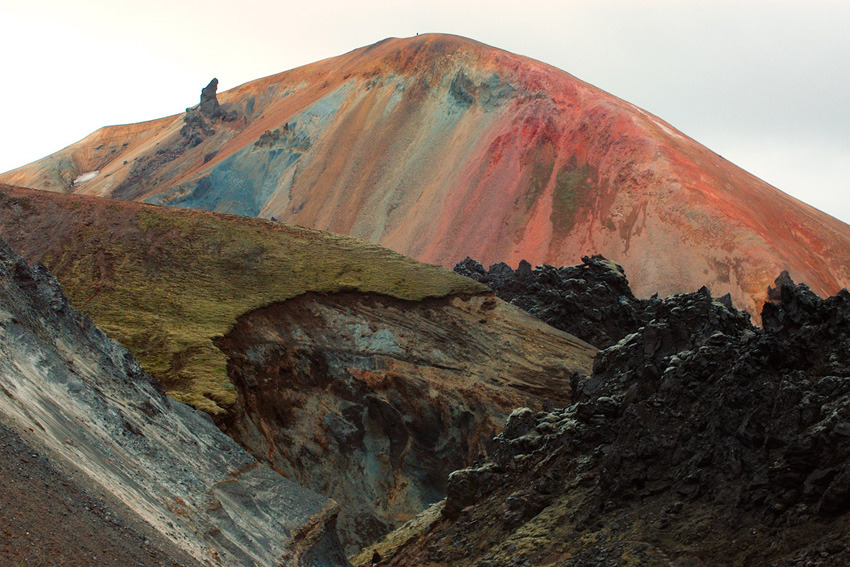
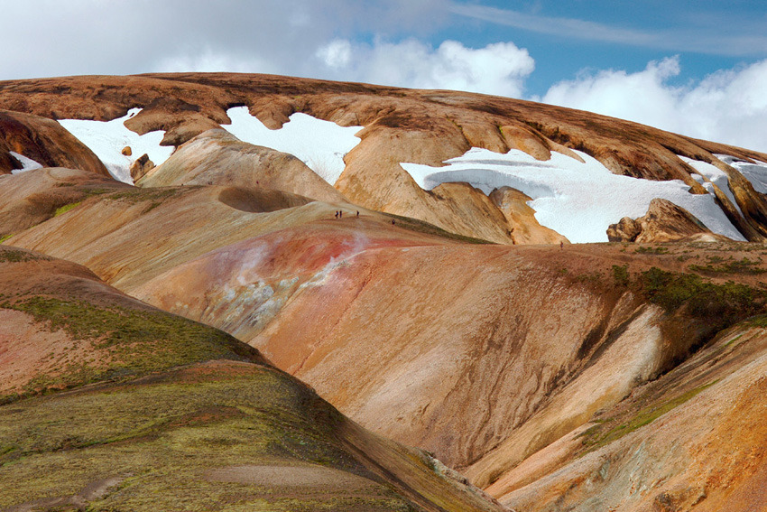
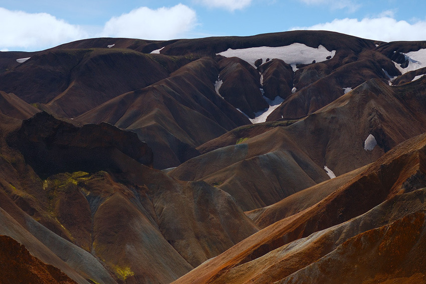
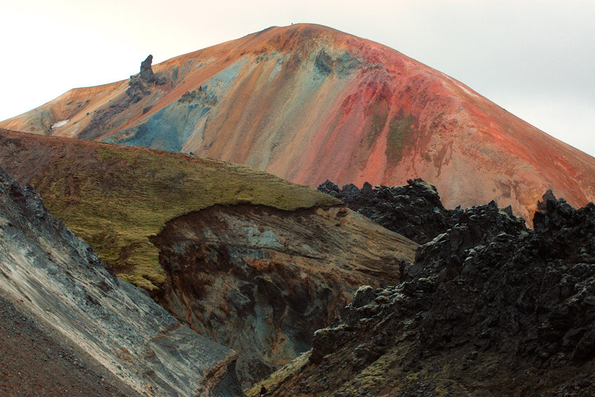
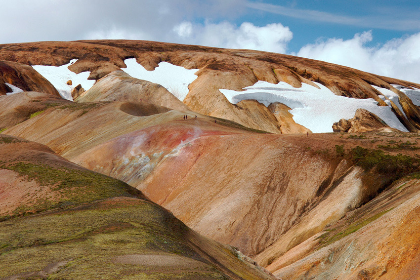
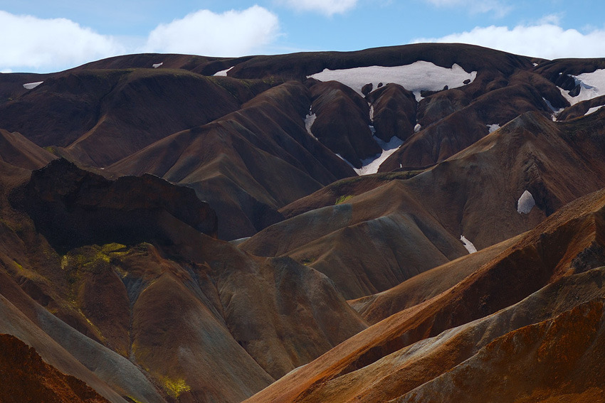

Colorful Iceland
Trekking to one of the most remote locations in the world, photographer Marcel Musil beautifully captures the serene landscape and unusually colorful Icelandic volcanoes.
Found on but does it float



Trekking to one of the most remote locations in the world, photographer Marcel Musil beautifully captures the serene landscape and unusually colorful Icelandic volcanoes.
Found on but does it float